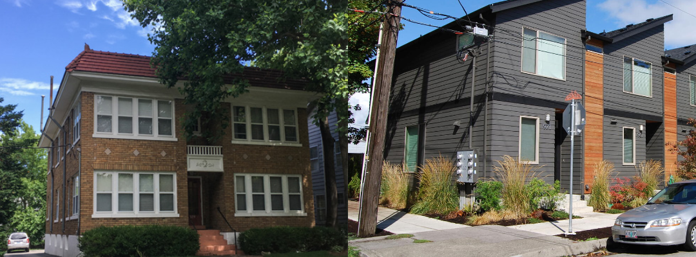
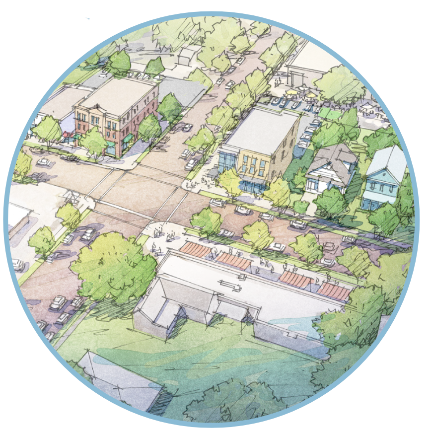

Housing Affordability Can’t Wait Any Longer
We sent the letter below to Asheville City Council on December 9th.
Want to learn more about pro-housing actions that you can take with us in the future? Sign up for our email list here.
Show your support for missing middle housing reforms!
Sign below before December 9th, when we’ll present your signatures to Asheville City Council.
(Not sure what “missing middle” means? Check out our explainer here.)

Open Letter to City Council
This letter is co-sponsored by Strong Towns Asheville and Asheville For All.
On the second anniversary of Asheville’s Missing Middle Housing Study and Displacement Risk Assessment, we are calling on the city’s elected officials and staff leaders to stop delaying the implementation of the report’s recommendations, and to move forward with housing policy by prioritizing facts over fears.
The 2023 Asheville Missing Middle Housing Study explained that:
- Asheville is lacking in homes, and in housing type diversity (page 4)
- The result is an “unprecedented burden” on working people and families (page 2)
- Asheville can make housing more affordable and reduce car-dependent sprawl by allowing more housing and more housing diversity in its core neighborhoods (pages 6-7)
Furthermore, the Displacement Risk Assessment that accompanied the Missing Middle Housing Study asserted:
- Missing middle housing is an anti-displacement solution with “high efficacy” (page 134)
- Applied as broadly across the city as possible, modest changes to the city’s zoning code and associated incentive structures can grow housing options without making displacement worse (page 97)
- Blocking off neighborhoods from new infill housing is likely to hurt, rather than help, vulnerable populations in those neighborhoods (page 126)
In 2024, Asheville’s commissioned Affordable Housing Plan was released. It doubled down. The plan recommended:
- Full support be given to the “Missing Middle” initiative (pages 50 and 52)
- Incremental pro-housing residential changes be applied citywide (pages 50-1)
- Incentives for missing middle and associated reforms be afforded “top priority” relative to other affordability initiatives (page 68)
We’re concerned that Asheville leadership missed the memo, or perhaps misinterpreted these recommendations. We’re calling for leadership to revisit the 2023 Missing Middle Housing Study and Displacement Risk Assessment and the 2024 Affordable Housing Plan’s endorsement of “missing middle” strategies, and to treat Asheville’s housing shortage with the urgency that is so often invoked on campaign trails and in Powerpoint presentations but lacking in actual city policy.
Comprehensive “middle housing” reforms, ones that are broadly applied and ambitious in scope, may be the most important tool in the toolbox for fixing Asheville’s housing crisis. They may also transform our neighborhoods for the better, with more walkability and public transit viability, more age and income diversity, and greater resilience and sustainability.
The recommendations are clear. Let’s not wait any longer!
Asheville For All
Strong Towns Asheville

Sign the Letter to City Council
Your name will not appear publicly on this website.
Scroll to add your name ⬇️